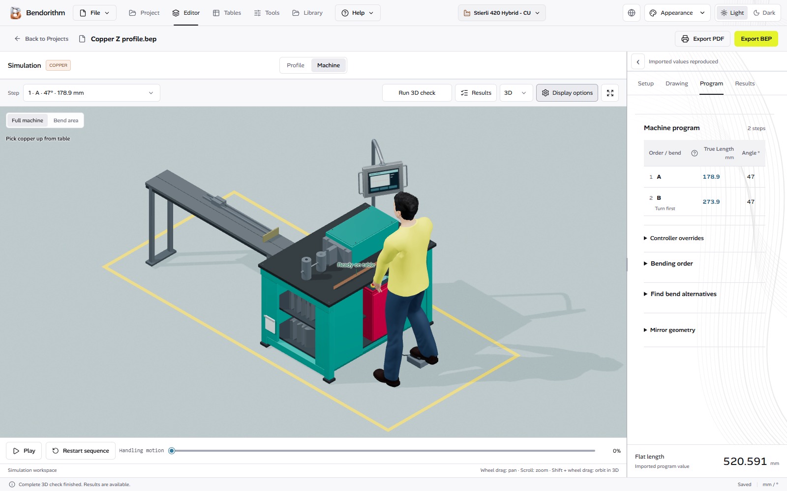

BENDING WORKSPACE · DESKTOP APPLICATION
From profile
to program.
Draw the part. Plan the bends. See the machine motion before you export.
BEP programs · A4 setup sheets · 3D + Engineering 2D

Display options. Same checking engine.
Draw with dimensionsInspect the complete sequenceExport a checked program
ONE CONNECTED WORKSPACE
The whole workflow,
in view.
From the first line to the setup sheet. Explore the tools already inside Bendorithm.
FROM THE FIRST LINE
One part. The complete workflow.
Watch a real drawing go from setup and dimensions to a checked machine program and an A4 setup sheet.
INSIDE BENDORITHM
See the actual tools.
Real screenshots captured from the application. Select a view to take a closer look.
YOUR NEXT WORKSPACE
Bring the next bend
into focus.
Bendorithm for your desktop. Find the published builds below and keep the setup notes with your work.
The public download will appear here when the first GitHub release is published.
- Platform
- Windows · x64
- Other platforms
- macOS · Linux — planned, not yet available
- Machine programs
- BEP
- Setup sheets
- A4 · PDF
- Interface
- EN · AR · DE · FR · IT
- License
- Offline activation · 3-day trial
BEFORE YOU START